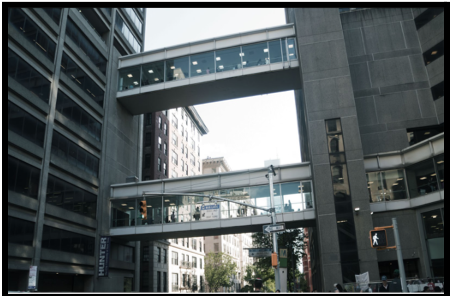

I took this photo outside the school. There was a protest about the rights of immigrants happening outside and it was starting to become a bit chaotic, and I thought that this was the perfect representation of New York! The Chaos and the beauty of it all coming together is what makes our city great! I made the photo a bit darker because I wanted to highlight the school and buildings in the back and I wanted to give off a more professional feel and I felt that my original photo was too dark.
